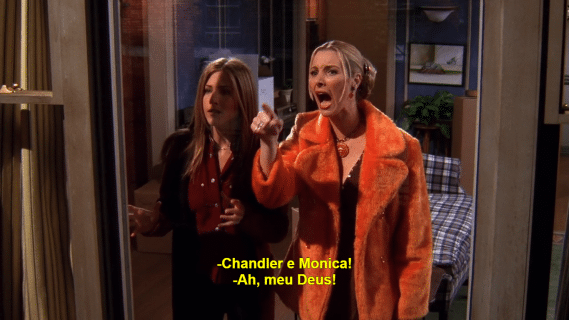

Na quinta temporada, Monica e Chandler tentam
manter seu novo relacionamento em segredo de seus
amigos. Phoebe dá a luz a trigêmeos no centésimo
episódio. Ela dá à luz um menino, Frank Jr. Jr.,
e duas meninas: Leslie e Chandler. O casamento de Ross
e Emily é cancelado por Emily, que sente ameaçada
por Rachel, quando Ross diz não estar disposto
a desistir de sua amizade com Rachel para atender
as exigências de Emily.
Phoebe começa um relacionamento
com o policial Gary. Monica e Chandler tornam seu
relacionamento público, para surpresa e felicidade
de seus amigos. Eles decidem viajar para Las Vegas
para surpreender Joey no trabalho, e resolvem se casar,
mas mudam seus planos depois de
encontrarem Ross e Rachel, ainda bêbados, recém-casados
na mesma capela.
Melhores episódios:
- "Aquele com Todos os Beijos" (05x02)
- "Aquele do Centésimo" (05x03)
- "Aquele com Todos os Dias de Ação de Graças" (05x08)
- "Aquele em que Todos Descobrem" (05x14)
- "Aquele em Vegas" (05x23/24)
